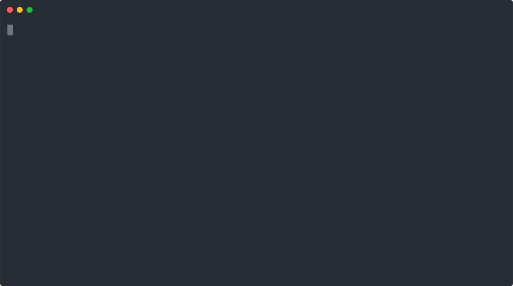
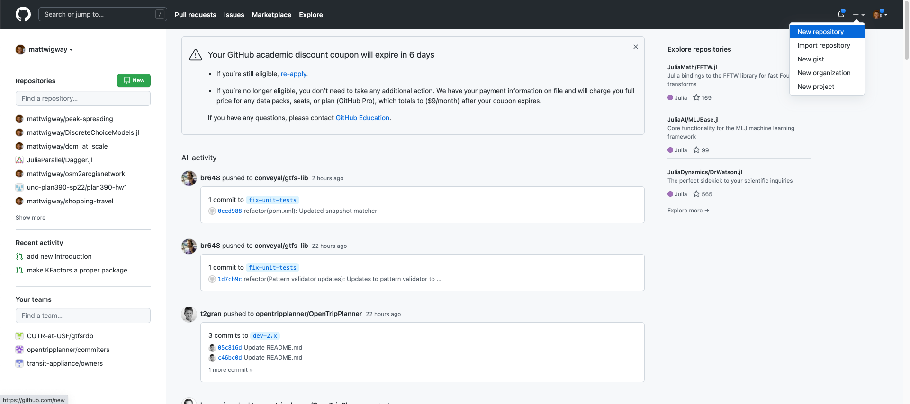
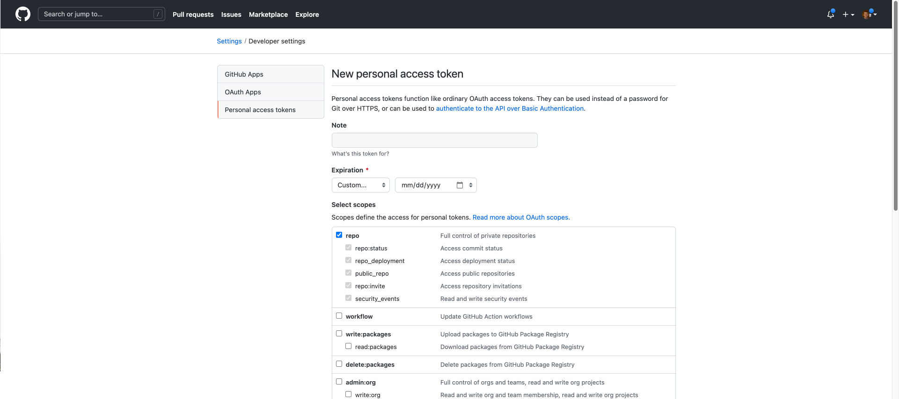
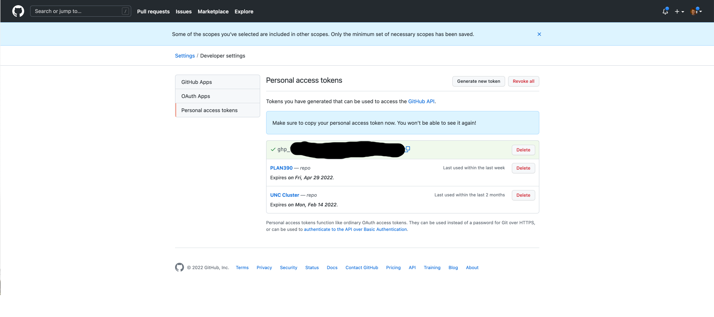

Version Control with Git and Github
Matt Bhagat-Conway
What is version control?
- Track changes made to your code
- Know when and who made changes to the code
- Revert to older versions of your code
- Archive specific versions of your code (e.g. for reproducing a particular analysis)
gitis probably the most popular version control system, and it’s free
Why should researchers use version control?
- Avoid conflicts when multiple researchers edit the same code files
- Keep a trail of all the different ways you specified your analysis for reproducibility
- Archive versions used for publication
- Revert changes that didn’t work out
- Keep multiple “branches” for experimental changes
What is Git?
- Version control system
- Command line application
- Several online sites for collaborating with Git - GitHub is most popular
- Focused on tracking changes in plain text files, e.g. R, Python, Stata do-files, Matlab, etc.
- Not Excel, Word, etc.
What is GitHub?
- GitHub is a website for storing and sharing code using
git - Many features for collaboration
- Code can be public or private
Git concepts
- Repository: code storage for a single project
- also the folder containing the code for that project
- Commit: snapshot of project state
- Branch: separate version of the code where you can try something before finalizing
- Working tree: the files on your computer that you are editing and that may not have been committed yet
- Remote: a server storing your code (e.g. GitHub)
What should I put in version control?
- Yes: code, documentation
- Maybe: papers, Word documents, small datasets
- No: Large datasets
Typical Git workflow
- Create a directory for your project. Initialize Git.
- Create code files
- Commit those code files
- Continue to edit code files to refine the project
- Commit changes regularly
- Nothing wrong with committing often, even if code doesn’t work yet
Collaboration with Git
- Don’t share your Git repositories in OneDrive, etc.
- I recommend not even storing git repositories in OneDrive, as OneDrive can get confused due to the large number of files Git uses to keep track of changes
- Instead, use a code-hosting service such as GitHub
What is the command line?
- Git is a command-line application
- A way of interacting with the computer using a textual rather than graphical interface
- To use the command line, you run commands. Each command has zero or more options and arguments
- When using the command line, you are always in a working directory. By default, commands will apply to files in this directory/folder.
What is the command line?
Anatomy of a command
ls -l slides
ls: Command (ls- list files) - always first item-l: Option (-l- long format) - always starts with-or--slides: Argument (list files in the directoryslides)- Press enter to run a command
Specifying folders/directories
- Nested directories are separated with
/ Documents/PLAN390refers to thePLAN390folder inside theDocumentsfolderDocuments/PLAN390/introduction.txtrefers tointroduction.txtinsidePLAN390insideDocuments- Any number of nested directories and files is a path
Autocompletion
- When typing a command or a directory, pressing
TABwill autocomplete - If there is more than one possibility,
TABTABwill show possibilities
Escaping spaces
- Spaces separate options and arguments
- If you want to refer to a file or folder with a space in it, two options
- Put a
\before the space- e.g.
Documents/Odum\ Git
- e.g.
- Enclose the entire path in
'or"- e.g.
"Documents/Odum Git"
- e.g.
- Put a
- Autocompletion will automatically escape any spaces it autocompletes
The working directory
- When you use the command line, there is always a working directory
- This is the folder that the terminal is running “in”
- Any commands you type will refer to files in this folder, unless you specify a complete path
Useful commands
cd directory: Change the working directorycd ..: Change to the parent directory (e.g. if inDocuments/PLAN_390, would change toDocuments)
ls: list files in the current working directorymv oldname newname: rename files or move them between directoriescp oldname newname: copy fileoldnametonewname, which may be in a different directorymkdir name: Make a folder/directorynamein the working directory
Accessing the command line
- Mac: Open the
Terminalapplication inApplications/Utilities - Windows: Once you’ve installed
git, right click a folder and choose “Git Bash here” - Everyone go ahead and do this now
Git getting started
- Follow along on your machine
- Open a terminal
- Navigate to where you want to save your files from this class
- On Windows: find where you want to save the files in the file manager, right-click and choose “Git Bash here
- On Mac, open Terminal and use
cd+ tab completion to navigate to directory- e.g.
cd Doc<TAB>->cd Documentsif you want to save in Documents folder
- e.g.
Git setup
- Only necessary the first time you use git on a new computer
- Run these commands:
git config --global user.name "Your Name"git config --global user.email "Your Email"
- Privacy: if you share your code publicly on Github, your name and email will be visible
- If this concerns you, set your name to initials, a pseudonym, etc.
- Set email to e.g.
nobody@example.com. Once you have a Github account, follow instructions from GitHub
Create a new git repository
mkdir git-intro # create a new directory to hold repository
cd git-intro # change the working directory to that directory
git init -b main # initialize a git repositoryCreate a file to commit to your repository
- Open a text editor (e.g. Visual Studio Code, TextEdit on Mac, Notepad on Windows)
- Write something in the editor
- Save the file as a .txt file in the git-intro folder
- TextEdit: Select Format -> Make Plain Text before saving
- Leave the editor open, go back to terminal
Commit the file
- Go back to your terminal
- Run
ls. You should see the file you just created.
Commit the file
- Run
git statusto see the current state of your repository
On branch main
No commits yet
Untracked files:
(use "git add <file>..." to include in what will be committed)
intro.txt
nothing added to commit but untracked files present (use "git add" to
track)Commit the file
- To commit a file, you must first add it
- This stages the current version for commit, useful if you want to commit multiple files at once
git add filenamegit statusto confirm it worked
Commit the file
git commit -m "commit message"- Quotes are important
- Your commit message should be a brief description of what you added or changed
- Useful if you ever want to go back to a previous version of your project
- Commit messages should give enough information for someone else to follow the development
- or you, in two years
Breaking down the commit process
git addwill save the current version of whatever file into the index- The index is a staging area for the next commit
- If you add a file you didn’t mean to,
git restore --staged filewill remove from index, but not change file - If you
git adda file and then make more changes, justgit addagain
Breaking down the commit process
- At the top of
git statusyou will see what files are in the index - If a file is in both the top and bottom section, it means it has changed since you added it.
git commitwill commit the version of the file when you added it
On branch main
Changes to be committed:
(use "git restore --staged <file>..." to unstage)
modified: intro.txt
Changes not staged for commit:
(use "git add <file>..." to update what will be committed)
(use "git restore <file>..." to discard changes in working directory)
modified: intro.txtBreaking down the commit process
git commitcreates the actual commit and records the changes- Once you have committed files, you can always return to those files
git commitonly records the files that you have added to the index- A commit is just a set of changes to the file
- Git can reconstruct the file at any point by stringing together the chain of commits
Commits are forever
- Once you create a commit, that commit is recorded permanently
- You can always revert the commit, but that will create another commit undoing the changes
- There are a few advanced commands to remove commits, but those are beyond the scope of this course
Commit messages
- Every commit is associated with a “commit message,” a short note about the contents of the commit
- Helps finding old commits if you need to
Commit messages
Good commit messages
- Create introduction file
- Switch to use medians in analysis of X
- Add documentation of method for X
Bad commit messages
- update code
- new analysis
- fixed error
Commit messages
![XKCD comic showing good and bad commit messages: created main loop & timing control 14 hours ago enabled config file parsing 9 hours ago misc bugfixes 5 hours ago code additions/edits 4 hours ago more code 4 hours ago here have code 4 hours ago aaaaaaaa 3 hours ago adkfjslkdfjsdklfj 3 hours ago my hands are typing words 2 hours ago haaaaaaaaands 2 hours ago [Caption below the panel:] As a project drags on, my Git commit messages get less and less informative.](xkcd_git_commit.png) © XKCD
© XKCD
Creating another commit
- Go back to your text editor, modify the file, and save it
- Back in the terminal:
git status
Creating another commit
git diffwill show what has changed since lastgit addorgit commit
matts-mbp-2:git-intro mwbc$ git diff
diff --git a/intro.txt b/intro.txt
index 28953cd..735e4ba 100644
--- a/intro.txt
+++ b/intro.txt
@@ -0 +2,3 @@
-PLAN 390 is teaching git.
\ No newline at end of file
+
+ Next week we will learn GitHub.
\ No newline at end of fileCreating another commit
- To create another commit, do as before:
git addandgit commit
Commiting multiple files
- You can run
git addas many times as you want beforegit commit; all the files will be combined into a single commit - You can specify multiple files after
git add: e.g.git add file1.txt file2.txt - You can specify a directory with
git add directory-name- this will commit everything in the directorygit add .to commit everything in the current directory- Use with caution. There may be files that you don’t want to commit (e.g.
.DS_Store)
Seeing your commits
git logwill list all of the commits so far and the commit messages- Go ahead and run this command
commit 7b4cebc2234fa8001812013400385f8bdbdbb02a (HEAD -> main)
Author: Matt Bhagat-Conway <matt@indicatrix.org>
Date: Tue Jan 18 14:36:56 2022 -0500
add schedule for next week
commit f0c25d440d112c9a7008e96fe41c496b8a175ad3
Author: Matt Bhagat-Conway <matt@indicatrix.org>
Date: Tue Jan 18 14:33:16 2022 -0500
add introductionInterpreting git log output
commit 7b4cebc2234fa8001812013400385f8bdbdbb02a (HEAD -> main)
Author: Matt Bhagat-Conway <matt@indicatrix.org>
Date: Tue Jan 18 14:36:56 2022 -0500
add schedule for next week
commit f0c25d440d112c9a7008e96fe41c496b8a175ad3
Author: Matt Bhagat-Conway <matt@indicatrix.org>
Date: Tue Jan 18 14:33:16 2022 -0500
add introductionInterpreting git log output
commit 7b4cebc2234fa8001812013400385f8bdbdbb02a- This section describes the commit with ID or hash
7b4ceb... - The commit hash is an ID assigned by
gitfor each commit - Used with many git commands, but you only need the first six letters
Interpreting git log output
(HEAD -> main)- HEAD: this commit is the most recent commit
- main: this commit is on the
mainbranch- More on that later
Interpreting git log output
Author: Matt Bhagat-Conway <matt@indicatrix.org>- I authored this commit
Interpreting git log output
Date: Tue Jan 18 14:33:16 2022 -0500- I authored this commit on Tuesday, Jan 18, 2022 at 2:33 pm (UTC-05:00)
Interpreting git log output
add schedule for next week- The commit message you entered previously
Interpreting git log output
commit 7b4cebc2234fa8001812013400385f8bdbdbb02a (HEAD -> main)
Author: Matt Bhagat-Conway <matt@indicatrix.org>
Date: Tue Jan 18 14:36:56 2022 -0500
add schedule for next week
commit f0c25d440d112c9a7008e96fe41c496b8a175ad3
Author: Matt Bhagat-Conway <matt@indicatrix.org>
Date: Tue Jan 18 14:33:16 2022 -0500
add introductionSeeing what changed in a commit: git show
git show COMMIT_HASHwill show what changed in a particular commit- Get commit hash from
git log - Only need first four characters or enough to make commit hash unique
- Will show hash, author, time, commit message, and what changes
Seeing what changed in a commit: git show
commit 7b4cebc2234fa8001812013400385f8bdbdbb02a (HEAD -> main)
Author: Matt Bhagat-Conway <matt@indicatrix.org>
Date: Tue Jan 18 14:36:56 2022 -0500
add schedule for next week
diff --git a/intro.txt b/intro.txt
index 28953cd..735e4ba 100644
--- a/intro.txt
+++ b/intro.txt
@@ -0 +2,3 @@
-Odum is teaching git.
+
+Next week we will learn GitHub.Seeing what changed in multiple commits: git diff
git diff FIRST_COMMIT_HASH SECOND_COMMIT_HASH- Commit hashes from
git log - Shows everything that changed after the first commit up to and including the second
diff --git a/intro.txt b/intro.txt
index 28953cd..735e4ba 100644
--- a/intro.txt
+++ b/intro.txt
@@ -0 +2,3 @@
-Odum is teaching git.
+
+On Wednesday we will learn GitHub.Keeping a clean working tree
- It’s best practice to not have any untracked files in your working tree, and not have any uncommitted changes except for ones you’re actively working on
- This helps avoid errors when committing
- After your commit, best practice is for
git statusto sayNothing to commit, working tree clean
.gitignore
- Often there will be files or folders that you don’t want to include in version control
- e.g. .DS_Store on Mac, pyc files with python, .RData with R, etc.
- You can tell Git to ignore these files by creating a file called
.gitignorein your repository - You can match multiple file names with
*, e.g.*.pycwill ignore all pyc files - You can check this file into Git so all your collaborators have the same ignored files
.gitignore
- Create a
.gitignorefile now - Ignore
*.docxfiles - Save a Word document in your repository
- Notice that
git statusdoes not show the Word document as being available for committing - If you try to
git addthe document, nothing will happen
.gitignore
- GitHub provides
.gitignorefiles for many languages at https://github.com/github/gitignore
Discarding uncommitted changes
- If you’ve made changes you don’t want to keep but have not committed them, you can discard them
git reset --hard HEADdiscards all changes since the last commit (except new files)git restore filediscards only changes to filegit checkout HEAD -- fileon older versions of git
git stashdiscards all changes, but saves them in a “stash” - you can get them back withgit stash pop
Viewing older versions of your files
- Find the commit you want to view
- Run
git checkout COMMIT_HASH
Look, but don’t touch
(base) matts-mbp-2:git-intro mwbc$ git checkout d6a403
You are in 'detached HEAD' state. You can look around, make experimental
changes and commit them, and you can discard any commits you make in this
state without impacting any branches by switching back to a branch.
If you want to create a new branch to retain commits you create, you may
do so (now or later) by using -c with the switch command. Example:
git switch -c <new-branch-name>
Or undo this operation with:
git switch -
HEAD is now at d6a403f commit test fileLook, but don’t touch
- You cannot change commits you’ve already made
- If you make any commits after checking out a commit, they will not be attached to your main branch
- When you switch back to main branch, any commits you make here will be left dangling (not gone, but hard to find)
- If you want to save commits built off a previous commit without reverting the more recent commit on the main branch, first checkout the commit then create a new branch
Reverting a commit
- If you’ve already made a commit and want to get rid of it, you can run
git revert commit-id commit-idcomes fromgit log, and you only need the first six or so lettersgit revert commit-idwill revert onlycommit-id. If it’s not the most recent commit, Git will try to back out the changes caused by that commit while preserving later commits. This can cause a conflict which we’ll talk about in a bit
Reverting a commit
git revertdoesn’t actually remove the commit—that would overwrite the history and defeat the purpose of version control- Instead, it creates a new commit undoing the changes from the commit
- This means that you can’t easily delete something entirely - someone could look back through the repository history to find it
- if you accidentally committed your password, change your password
Using vim
- You will likely be presented the commit message in
vim, a command line text editor - Press
ito enter “insert mode” - Edit as normal, using arrow keys to navigate
- When done, press
ESCto exit insert mode - Then type
:wqto enter command mode (:), write the modified file (w) and quit (q)
Reverting multiple commits
- If you want to revert several commits, you can run
git revert commit-id..HEAD - This will create one commit reverting each commit starting, in the reverse order they were applied
- If you don’t want one revert commit per original commit, you can do
git revert --no-commit commit-id..HEAD- This will revert all of the commits, and stage the changes, but not commit them
- Follow up with
git committo commit the entire reversion as a single commit
Branches
- Branches are a way to try out changes without affecting your existing code
- If you’ve ever made copies of your code (
analysis2.Retc) you’ve created something similar to a branch - When you create a branch, you can make changes to it without affecting your main branch
Branches are cheap
- When you create a branch, git doesn’t actually copy your files
- Git keeps track of the contents of all your files as a series of commits to the files
- A branch is just a separate list of commits
Creating a branch
Create and switch to the branch new-branch
git switch -c new-branchor, on older versions of git
git checkout -b new-branch-c stands for “create”, and -b stands for “new branch”
Using branches
- Edit the text file you created
- Create a new text file
- Add and commit them both
Using branches
- If you run
lsnow, you should see your new files git statusshould end withnothing to commit, working tree clean- This means all of your files have been committed
Switching branches
- Run
git switch main - Run
ls. Your new file should be gone- because it’s in the other branch
- Look at the file you edited. It should show the original file, not the edited one.
Switching branches
- Run
git switch new-branch - Run
ls. Your new file should be gone and your changes to your first file should be back
Listing branches
git branchwill list all branches in your repository, and highlight the current branchmatts-mbp-2:git-intro mwbc$ git branch main * new-branch
Merging
- If you’re happy with the work you’ve done on a branch, you’ll eventually want to incorporate it back into your
mainbranch - In Git, incorporating one branch into another is called “merging”.
Merging
- You perform a merge while the branch you want to merge into is checked out
- Switch back to the main branch
- You can now merge your branch by running
git merge new-branch
Merging
(base) matts-mbp-2:odum-git mwbc$ git merge new-branch
Updating a53cbba..b7db6f0
Fast-forward
test.txt | 3 ++-
test2.txt | 1 +
2 files changed, 3 insertions(+), 1 deletion(-)
create mode 100644 test2.txtDeleting merged branches
- You can (but don’t have to) delete branches once they are merged
git branch -d branch-name- Git will error if you try to delete a branch that has not been merged
Types of merge
- Fast-forward: no new commits on
mainsincenew-branchcreated.new-branchcommits added tomain - True merge: both branches have had commits since they created. New merge commit added to
mainat end indicating merge, with two parent commits (one frommainand one fromnew-branch)
Resolving merge conflicts
- Git attempts to automatically merge the two branches together
- If different files were modified, or different parts of the same file,
git mergewill apply changes from both branches- Note that even if the merge succeeds, the resulting code may not work
- If the same parts of the same files were modified, Git will report a merge conflict
Resolving merge conflicts
- Run
git clone https://github.com/mattwigway/merge-conflict.git - This will download a repository from Github that has a merge conflict
- We’ll talk more about Github on Wednesday
- Run
cd merge-conflictto change your working directory to the repository you just downloaded
Resolving merge conflicts
- Before we attempt the merge, investigate the situation
- Use
git statusto see the most recent commits - Switch to the
add-weightbranch and usegit statusto see the commits there - Look at
analysis.Ron both branches
Resolving merge conflicts
- Merge the
add-weightbranch intomain
Resolving merge conflicts
- Merge the
add-weightbranch intomain
Auto-merging analysis.R
CONFLICT (content): Merge conflict in analysis.R
Automatic merge failed; fix conflicts and then commit the result.What happened?
- Git could not automatically merge
analysis.R, because both branches changed different parts of the code.
What to do now?
- If you (re)-open
analysis.R, you’ll see that Git has marked where the conflict was with<<<< - It has included the code from both branches
What to do now?
- Edit the file so it has the code you want to save
- It’s okay to mix and match, or even write (a small amount of) new code, just get the final file looking like you want
- Commit the file(s) with merge conflicts
git addthem like normalgit committhem without the-moption; Git will present a default commit message for you to edit.
- If you get in over your head,
git merge --abortwill take you back to where you were before runninggit mergein the first place
Rebasing
- If you merge two branches that have diverged, you will get a merge commit, and your commit history will have multiple paths
- Another option is to rebase your branch based on the latest commits to the branch you’re merging into
Rebasing
- Rebasing rewrites history and changes the order of commits
- Rebasing a branch onto
main, for example, will rewrite the repository history so it looks like all the commits on that branch came after the last commit onmain
How does rebasing work?
- First, Git “rewinds” the branch you’re currently on to the last common commit between it and the other branch
- It then successively attempts to apply each commit. If merge conflicts occur, you have to resolve them one at a time.
- Once all conflicts have been resolved, your branch now appears as if it were built directly from the latest commit in the other branch
- This means you can do a fast-forward merge instead of a true merge
Rewriting history can be dangerous!
 © Universal Studios
© Universal Studios
Pros and cons of rebasing
- Fast-forward merges become possible
- This makes searching through and reverting history on the main branch simpler
- Rebasing actually creates new commits, with the same content but different IDs. If you’re working in a shared repository, this can create a problem if someone else has based work on the branch you rebase, as your branch will refer to the updated commits, but theirs will still use the old ones.
- Rule of thumb: rebase sparingly, and only do so on branches that only you use, and that you haven’t based other branches off of
How to rebase
- Start on the branch you are rebasing, not the branch you are eventually merging into
- Switch to the
second-regressionbranch - Run
git rebase main
How to rebase
(base) matts-mbp-2:odum-merge-conflict mwbc$ git rebase main
Auto-merging analysis.R
CONFLICT (content): Merge conflict in analysis.R
error: could not apply c06acab... log variables
hint: Resolve all conflicts manually, mark them as resolved with
hint: "git add/rm <conflicted_files>", then run "git rebase --continue".
hint: You can instead skip this commit: run "git rebase --skip".
hint: To abort and get back to the state before "git rebase", run "git rebase --abort".
Could not apply c06acab... log variablesWe have a merge conflict
- Resolve the merge conflict like you did before
git addthe files but do notgit commit- Run
git rebase --continueand edit the log message if needed - If you get in a pickle,
git rebase --abort
Rebase is finished
- It’s a good idea to check your code at this point to make sure it still works
- Git temporarily saves your work in the special branch
ORIG_HEAD - If you want to undo the rebase, run
git reset --hard ORIG_HEAD - If it’s been longer and you’ve run other Git operations, this
git resetmay not work - You may still have options to undo using the
git reflogcommand, but that’s beyond the scope of this course
Tagging a commit
- Git allows creating a tag for any commit
- Tags are like branches that cannot change
- Useful for recording a version used in a publication or presentation, or a released version of software
Create a tag
git tag -m "description of tag" name-of-tag- Can now check out the exact version tagged with
git checkout name-of-tag
What is Github?
- A place to store your code
- A graphical interface to Git
- A place to collaborate on code with others
Differences between Git and Github
Git
- Runs on your computer
- No internet connection needed
- Interacts with files on your computer
- Command-line interface
- No collaboration features
Github
- Website
- Graphical interface
- Strong collaboration features
- Remote code storage and backup
Github concepts
- Repository: code and version history for a single project
- User: a single user who can have any number of repositories
- Organization: a collection of users who have shared repositories
- Fork: a copy of a repository under a different user or organization
- Branch: within a repository, a separate version of the code
- Merge: bringing changes from a branch back into the main repository
Github concepts
- Push: share commits from your computer to Github
- Pull: Copy commits from Github to your computer, or to your fork
- Pull request: a request to merge changes from your fork back into the original repository
- Clone: creating a copy of a repository on your computer that is linked to the repository on Github
- Remote: specifies which Github repository the repository on your computer is linked to
Github concepts
- Public repository: code and version history viewable by anyone, editable by people you specify
- Private repository: code and version history private
The Github interface
Creating a Github repository
Creating a new Github repository
Creating a Github repository
- Choose a name and description
- Leave all initialization options unchecked
Creating a Github repository
- Select “HTTPS” and follow instructions for pushing an existing repo from the command line
git remote add origin https://github.com/username/repo.git
git branch -M main
git push -u origin mainCreating a Github repository
git remote add origin https://github.com/username/repo.git - adds a remote to your local repository so that git knows which Github repository it is associated with
Creating a Github repository
git branch -M main - renames the current branch to main (optional)
Authenticating to Github: Mac: Option 1
- Download and install the Git Credential Manager
- You’ll be prompted to log in when you first push commits to Github
Authenticating to Github: Mac: Option 2
- Download and install the Github Command Line Interface
- Run
gh auth login
Authenticating to Github: Mac: Option 3
- I don’t recommend this one as it’s more difficult to set up
- Create a “personal access token”
- Select “repo” scope
Authenticating to Github: Mac: Option 3
Creating a personal access token
Authenticating to Github: Mac: Option 3
After creating a personal access token
- Copy token, and use as password when running
git push
Pushing your code to Github
git push -u origin main- On Windows, or Mac option 1, you’ll now be asked to authenticate
- On Mac, using option 3, enter your Github username and the token you just copied
Creating a Github repository
- Select “HTTPS” and follow instructions for pushing an existing repo from the command line
git remote add origin https://github.com/username/repo.git
git branch -M main
git push -u origin mainCreating a Github repository
- Your repository should be created. Go back to Github and you should see your files.
Updating your Github repository
- When you use
git commit, that commit is only on your computer - Unlike Dropbox/OneDrive, syncing is not automatic
git pushwill send commit to Github
Downloading updates to your Github repository
- If you’re working with a team or if you make changes using the Github web interface, there will be commits on Github that aren’t on your computer
git pullwill download those changes
Pull requests
Pull requests
- A pull request is a request to merge changes into the main codebase
- Often used for open-source projects, but useful within teams as well
- Provides a collaborative environment for code review
Creating a pull request
- The first step to creating a pull request is to create a branch
- Make commits, etc.
- Push the branch to GitHub
- Don’t merge - create a pull request requesting a merge
Pushing a branch to GitHub
- Create and commit to branch as usual
git push -u origin branch-name- This will push the branch to GitHub.
-utells Git to “track” the upstream branch, so changes locally will be reflected on GitHub and vice-versa
Pushing additional commits
- Once you have first pushed a branch to GitHub, additional commits can be pushed with
git push - No options needed
- If you can’t remember if you pushed already,
git pushby itself will tell you
Creating a pull request
- In your browser, go to your repository on GitHub
- https://github.com/username/reponame
- In the upper-left, select the branch
- Click “Contribute” and choose “Open pull request”
- or “Compare” to get a preview of what is different between branches
Reviewing a pull request
- Github provides an interface to view and comment on changes and the pull request generally
- You can modify the pull request by adding additional commits on the branch
- Once you are ready, if there are no merge conflicts you can merge the pull request within the Github interface
Create a comment on and approve your pull request
- On Github, navigate to your repository and click “pull requests” and find your pull request
- Add a comment to the entire pull request
- Switch to the “files changed” view
- Use the “+” button to create a line comment
- Click “review changes” and add a comment and approve changes
- Can adjust repository settings to require approval to merge
Merge your pull request
- Click “merge pull request” at the bottom of the page
- If there are no merge conflicts, will merge automatically and prompt you to delete the branch
Retrieving updated code on your computer
- Switch back to the main branch
git pullto get the latest codegit pullwill always update current branch
Working on shared branches
- If you’re working together on a branch, should always
git pullandgit pushfrequently - This avoids two people committing at once rather than building off of each other’s commits
- If you both commit at once, you will not be able to push
Pushing a commit when someone else has already pushed
To github.com:mattwigway/odum-julia.git
! [rejected] main -> main (fetch first)
error: failed to push some refs to 'github.com:mattwigway/odum-julia.git'
hint: Updates were rejected because the remote contains work that you do
hint: not have locally. This is usually caused by another repository pushing
hint: to the same ref. You may want to first integrate the remote changes
hint: (e.g., 'git pull ...') before pushing again.
hint: See the 'Note about fast-forwards' in 'git push --help' for details.Resolving a push failure
- Run
git pull --no-rebaseorgit pull --rebase git pull --no-rebasewill merge your commit and their commit, and create a new merge commitgit pull --rebasewill rebase: attempt to apply the changes from your commits on top of the changes from their commits- In either case you may need to resolve merge conflicts
- If you rebase, you will resolve merge conflicts one commit at a time
- If you merge, you will resolve merge conflicts all at once
Github Flow
- Github Flow is a recommended way to manage branches and pull requests
- It’s a set of practices, not a part of the software
- In Github Flow, all development happens on branches specific to a particular task
- Pull requests are then created to merge those into a main branch
- This avoids conflicts between project members
- Ensures two people see every code change
Cloning an existing repository
- If there’s already a repository on Github, you can “clone” it to your computer with
git clone - e.g.
git close https://github.com/mattwigway/merge-conflict.gitthat we saw previously - This will copy the entire repository history to your computer
Issue tracking
- Every Github repository comes with an issue tracker
- Each issue has a title, a description, and an issue number
- Team members can comment on issues
- Referencing an issue by number in a commit message will link that commit to that issue
- If you say “close”, “fix”, or “resolve” followed by an issue number, that issue will automatically close when committed/merged to the main branch
Forks
- Your own copy of any repository on Github
- You can make changes to this copy, and later request that they be integrated “upstream”—into the original repository
- Pull requests can be created between forks

https://projects.indicatrix.org/odum-git